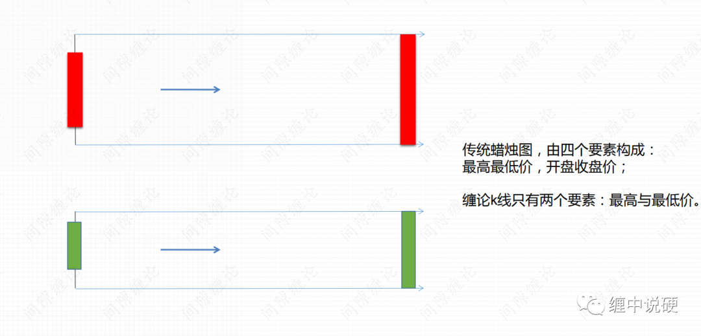
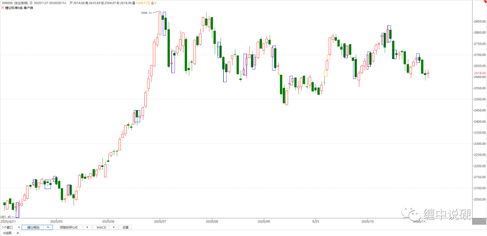
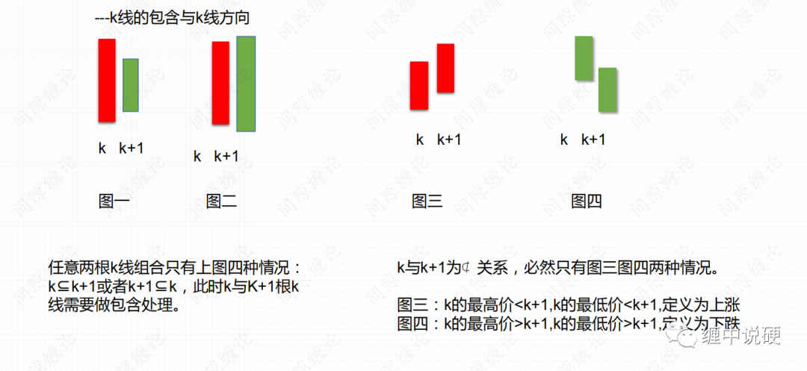
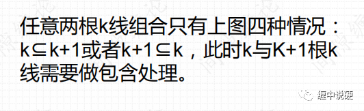
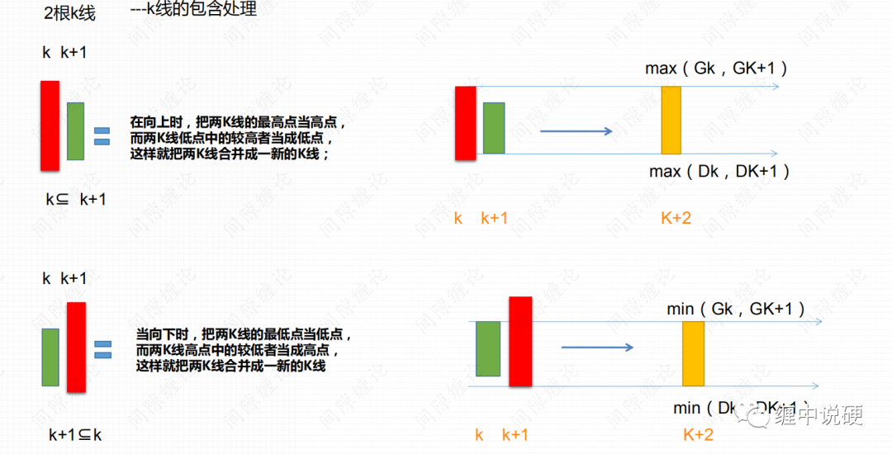
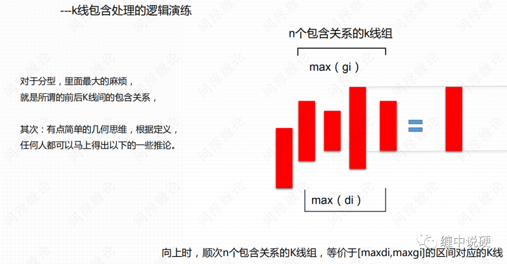
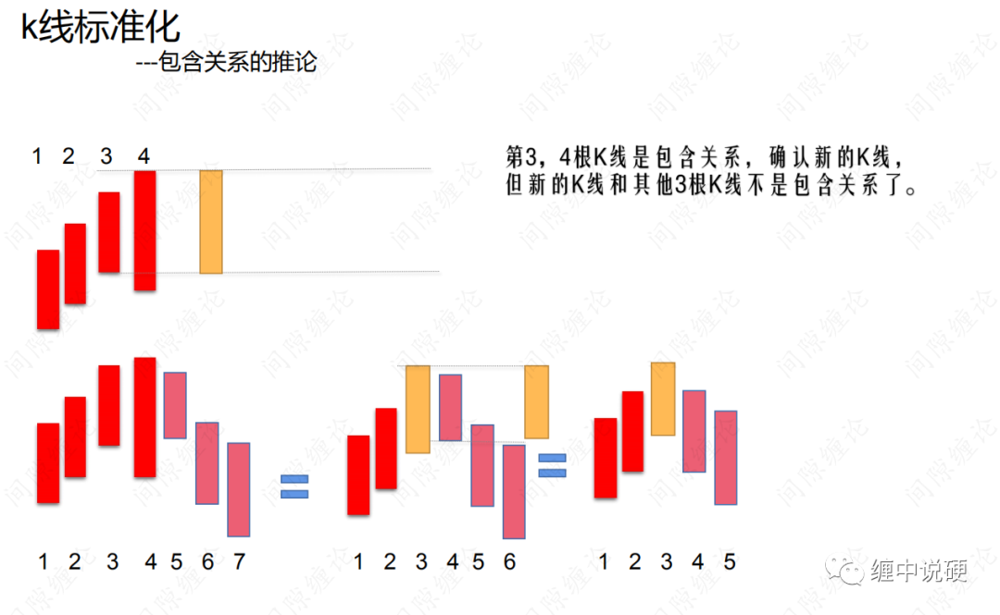
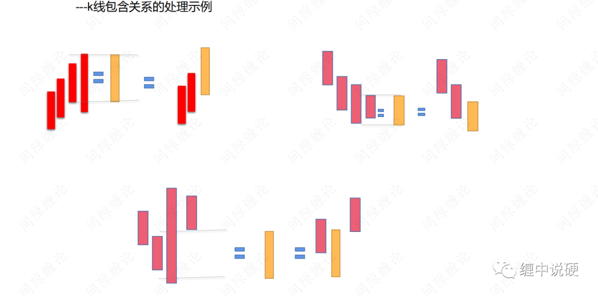
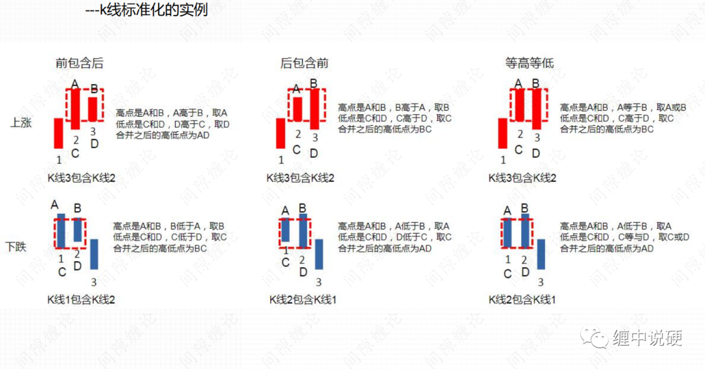

缠论快速入门之k线合并
很多人讲千人千缠，和波浪一样。实际上基础部分，笔，段，中枢是统一标准，不存在每个人不同的划分。只有到交易层面才存在差异，这差异体现在两个方面：
1：每个人根据自身特点，交易的级别不同；
2：递归，同级别分解和非同级别分解只要不违背走势和结合律，按照有利于交易的方式分解，是存在不同的分解方法。
最基础的部分，是从k线-笔-段-中枢-走势类型-递归大级别段-大级别中枢-大级别走势。从这个路径可以看到，最小级别的段是由笔构成，而最小级别以上的段，都是小级别走势递归构成。
我们的交易，是建立在不同级别最后一个中枢，或者走势类型上构建的。今天的发文先讲k线到笔的构建。

第一步，普通k线转为缠论k线，传统的蜡烛图有四个数据，而缠论的数据只有两个，高点和低点。k线这样处理后，就没有其他理论说的单根k线，比如十字星，也没有三根k线组合比如黄昏之星这样的情况。
第二步，k线的标准化，也就是处理k线的包含。

（上图所示为k线的包含，蓝色框框就是k线合并后的标准化k线。）
什么是缠论中的k线包含关系

k线的包含关系实质是对两个k线组合做完全分类，而顶底分型和上升下降k先，就是对处理完全包含关系标准化的三根k线组合做的完全分类。
2根k线的完全分类只有上图四种情况。
显然图一和图二是包含，而图三和图四是没有，图一是前包含，图二是后包含。所以包含的定义是相邻两根k线，一根的高点大于等于另一根，同时低点小于等于另一根。用数学公式表达就是：

k线合并的第二个要点是，合并后的k线要一直合并，直到不能合并为止。
k线的包含处理：




